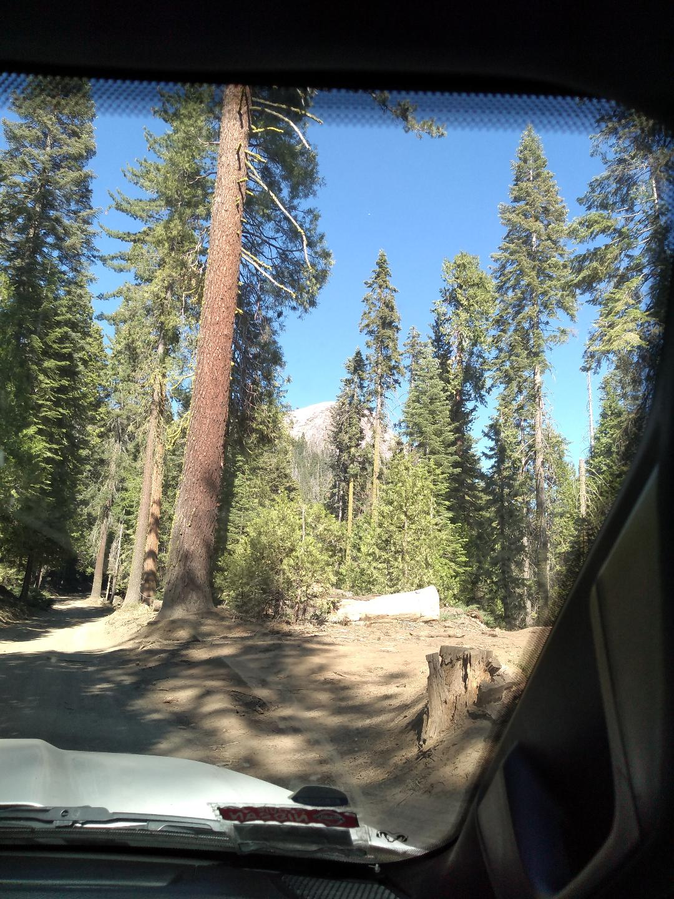
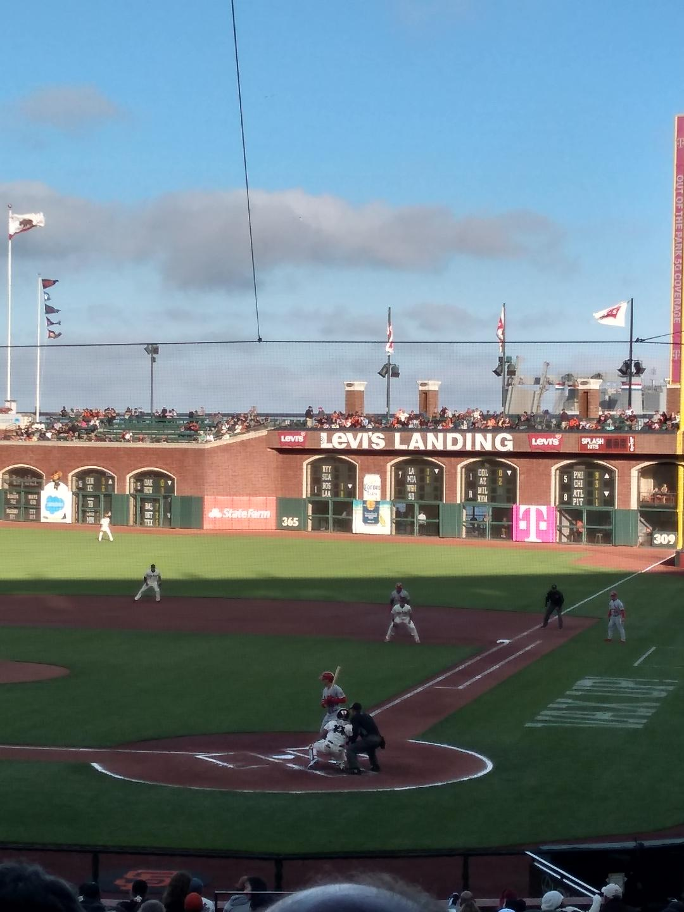
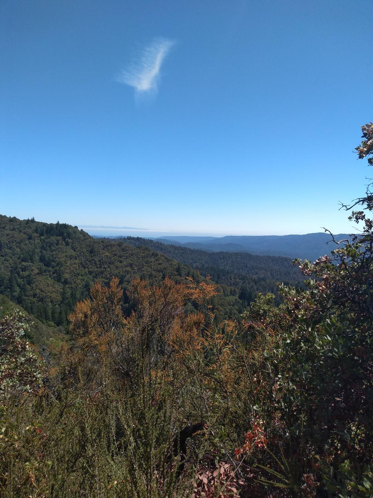
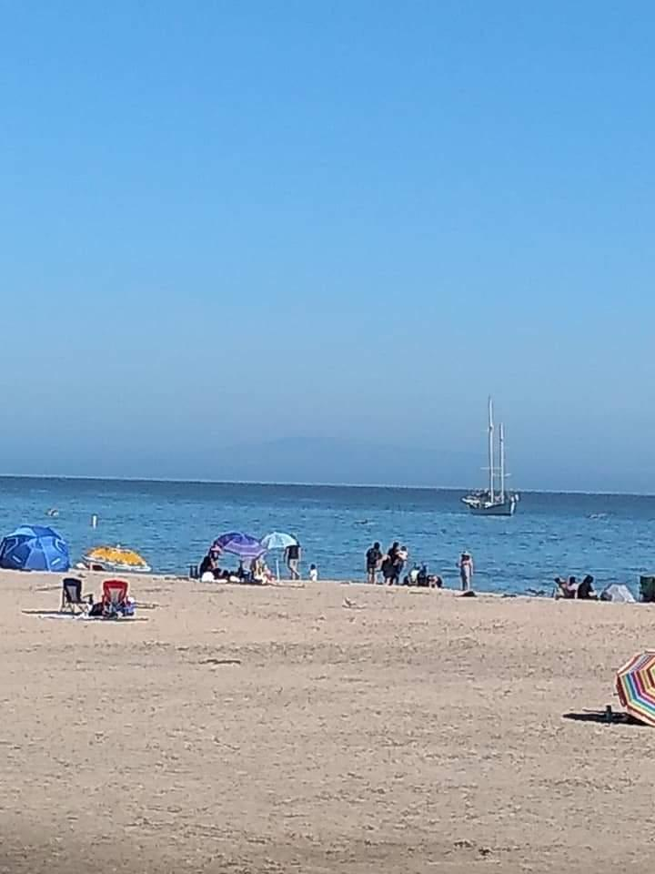

California
| Off-Roading |
San Francisco |
Castle Rock |
Santa Cruz |
|  |
 |
 |
 |
Off-Roading
- Our son has a Dodge Ram 1500 and enjoys off-roading.
- He took us on an adventure to the Sierra National Forest.
- We had a great time. We saw the Fresno Dome and cows.
|
San Francisco
- We have seen many sites in San Francisco over the past six years.
- The highlight of this trip was the Giants vs Cardinals game.
- It was the coldest July game I've ever watched.
|
Castle Rock
- California is full of beautiful hiking trails.
- They are so peaceful, it's easy to forget where you are.
- I really enjoy hiking with my son. It's great bonding time.
|
Santa Cruz
- After hiking in Castle Rock, we ended our day in Santa Cruz.
- We enjoyed walking along the beach.
- We ate great meal on the pier.
- We ended our day with a game of mini-golf.
|